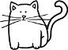

Evini kalesi, yabancıyı düşmanı bellemiş, konuşkan mı konuşkan, hani neredeyse çenesi düşük bir kız kurusudur Evham Hanım. Sesi o kadar pestir ki, sanırsınız kırk yıllık sigara tiryakisi. Yaşını ne o bilir, ne de onu yakından tanıyan eş dost akraba. Evham Hanım'ın penceresi bir hudut boyudur. Dışarıyı içeriden, yabancıyı tanıdıktan, geçmişi şimdi'den, bilineni bilinmeyenden kati surette ayırmak için çekilmiş yırtık pırtık bir perde asılıdır pencerede boydan boya. Perdenin arkasından bir çift çipil göz korkuyla bakar dünyaya. Evham Hanım'ın gözleridir bunlar. Kırpıştırmamak için uğraşır daima. Öyle ya, ya o gözlerini kırpıştırırken yıkılırsa dünya? Nasıl hazırlıklı olacak, nasıl koruyacak kendini? Gözleri sulanır da sulanır dimdik bakmaktan, dayanamaz, bu sefer üst üste kırpıştırır. Sonra bir kuruntu, bir sıkıntı. Ya o gözlerini kapattığında, yani tam da o esnada bir kötülük sızdıysa evine dışardan? Ya dünya yıkıldıysa bu zaman zarfında? Hop oturur hop kalkar. Volta üstüne volta atar. Bitap düşünce uyuyakalır. Ama uykusunda dahi kendini evhamlanırken görür. Evham Hanım yazık yalnız kalmasın diye boğucu ıssızlığında, ara sıra ziyaretine giderim. Kapısını çalar beklerim. Öyle herkese açmaz. Sadece tanıdıklarına. Çok sürmez aralanır kapı. Buyur edilirim. İçerisi küf ve limon kolonyası ve bir de un kurabiyesi kokar buram buram. Muhteşem bir evcimenliği vardır Evham Hanım'ın, çok da iyi aşçıdır. Tek sorun evinden dışarı hiç mi hiç çıkmadığı için bir parça küf kokar üstü başı ve tüm ikramları. Kokular içre kokular arasında karşılıklı oturur bakışırız senelerdir.
Anlatır da anlatır. Dinlerim de dinlerim. İkram ettiği çayı değil, sesinin melodisini içerim. Yarı yolda bıraktığımız tasarılar, hayal bile etmeye cesaret edemediğimiz özlemler, içimizde ukde kalanlar ve hayaller, hırslar ya da hatıralar... Vazgeç hepsinden. Kapan kendine, kendi içine. Zira dünya kötülüklerle dolu bir kara ormandır. Fitne fücur diz boyu baksana. Hele kadınsan aman dikkat et üstüne başına, adımına adamına, sen en iyisi hiç çıkma, hiç koşturma, otur oturduğun yerde, büzül kal benimle, tortop olalım, ne olur ne olmaz, kabuğumuzdan ayrılmayalım. Konuşur da konuşur.
Nice sonra zamanı hatırlar, gitmek için izin isterim. "Ben artık kalkayım." Bırakmaz Evham Hanım. "Ayol daha yeni geldin. Ne güzel oturuyoruz işte." Çay doldurur gene, biraz daha kurabiye. İllaki kal. Israr kıyamet. Evham Hanım'ı ziyaret etmekteyseniz öyle hemencecik gidemezsiniz. Geçerken şöyle bir uğranılacak yer değildir bu mekân. Adımını attın mı çekiverir içine içine.
Evham Hanım'ın bir kedisi vardır. Gelir sürtünür ayaklarınıza. İsmi ACABA.
Evham Hanım sual eder ki: Acaba öyle değil de böyle olsaydı ne olurdu? Acaba filanca sene falanca kişi bana kötülük yapmak istedi mi?
Acaba şu akraba bu akrabaya ta seneler evvel şöyle bir laf ettiğinde ne demek istemişti?
Acaba seçmediğim yolları seçmiş olsaydım nerelere varırdım, acaba hayat nasıl yaşanır bundan sonra?
Demlik dibini bulur, zihnim kıvamını: Acaba bir gün aniden yazma yeteneğimi yitirirsem ne olurum? Acaba bir gün aniden yazma yeteneğimi yitirirsem ne olurum diye sormak sormamaktan yeğ mi beter mi?
Acaba olsam, ersem, varsam ne olur? Acaba olmasam, ermesem, varmasam ne olur?
Evham Hanım konuştukça car car, külrengi tombul kedi ACABA ayaklarına sürtünür mırıldanarak. Ben büzülürüm koltukta. Gözümde büyür, ulaşılmaz olur dış dünya. Baş edemeyeceğimden korkmaya başlarım. Perdelerin delik deşik yırtıkları arasında ürkütücü bir çığırtkanlıkla seslenir toplum. Çağırır didinmeye, yorulmaya, hırpalanmaya, savaşmaya: "Eliiiif, pabucu yarım, çık dışarıya oynalım, gel de seni biraz hırpalayalım, şayet hırpalanmazsan biz de seni dışlayalım... Eliiiif, pabucu yarım!"
Evham Hanım başını sallar endişeli endişeli. "Bak gördün mü nasıl da çağırıyor toplum gene seni, sakın gelme oyuna, çıkma dışarı. Kal burada, benimle bu kuytuda yaşlan... Ben sana kurabiyeler pişiririm daima." Biraz daha büzülürüm koltukta. Beynim bedenime ağır gelir. Ne dışarı çıkmaya cesaretim kalır, ne de cesaretlenmek için bir sebebim. Dağılır un kurabiyesi, mırıldanır kedi, damla damla erir ufalıveririz Evham Hanım'ın sesinin dalgasında.
Arizona